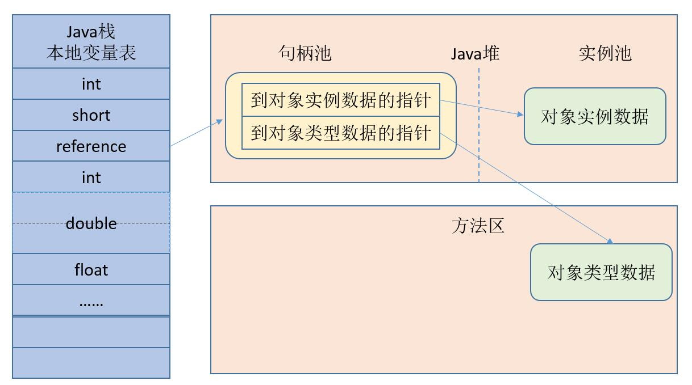

<!DOCTYPE html>
<html lang="en">
<head><meta name="generator" content="Hexo 3.8.0">
    <meta charset="utf-8">
    
    <title>
        堆中对象分配&amp;布局&amp;访问 |
        
        YingLong</title>
    
    
        <meta name="keywords" content="JVM">
    
    <meta name="viewport" content="width=device-width, initial-scale=1, maximum-scale=1">
    <meta name="description" content="Java与C++之间有一堵由内存动态分配和垃圾收集技术所围成的“高墙”，墙外面的人想进去，墙里面的人想出来。 对象的创建Java中创建对象（例如克隆、反序列化）通常仅仅是一个new关键字。当虚拟机遇到一条new指令时，首先将去检查这个指令的参数是否能在运行时常量池中定位到一个类的符号引用，并检查这个符号引用代表的类是否已被加载、解析、和初始化过。如果没有必须先执行相应的类加载过程。 在类加载检查通">
<meta name="keywords" content="JVM">
<meta property="og:type" content="article">
<meta property="og:title" content="堆中对象分配&amp;布局&amp;访问">
<meta property="og:url" content="https://yaoyinglong.github.io/Blog/Java/VM/堆中对象分配&布局&访问/index.html">
<meta property="og:site_name" content="YingLong">
<meta property="og:description" content="Java与C++之间有一堵由内存动态分配和垃圾收集技术所围成的“高墙”，墙外面的人想进去，墙里面的人想出来。 对象的创建Java中创建对象（例如克隆、反序列化）通常仅仅是一个new关键字。当虚拟机遇到一条new指令时，首先将去检查这个指令的参数是否能在运行时常量池中定位到一个类的符号引用，并检查这个符号引用代表的类是否已被加载、解析、和初始化过。如果没有必须先执行相应的类加载过程。 在类加载检查通">
<meta property="og:locale" content="en">
<meta property="og:image" content="https://yaoyinglong.github.io/images/通过句柄访问对象.png">
<meta property="og:image" content="https://yaoyinglong.github.io/images/通过直接指针访问对象.png">
<meta property="og:updated_time" content="2019-06-27T09:26:09.582Z">
<meta name="twitter:card" content="summary">
<meta name="twitter:title" content="堆中对象分配&amp;布局&amp;访问">
<meta name="twitter:description" content="Java与C++之间有一堵由内存动态分配和垃圾收集技术所围成的“高墙”，墙外面的人想进去，墙里面的人想出来。 对象的创建Java中创建对象（例如克隆、反序列化）通常仅仅是一个new关键字。当虚拟机遇到一条new指令时，首先将去检查这个指令的参数是否能在运行时常量池中定位到一个类的符号引用，并检查这个符号引用代表的类是否已被加载、解析、和初始化过。如果没有必须先执行相应的类加载过程。 在类加载检查通">
<meta name="twitter:image" content="https://yaoyinglong.github.io/images/通过句柄访问对象.png">
    

    

    
        <link rel="icon" href="/favicon.ico">
    

    <link rel="stylesheet" href="/libs/font-awesome/css/font-awesome.min.css">
    <link rel="stylesheet" href="/libs/open-sans/styles.css">
    <link rel="stylesheet" href="/libs/source-code-pro/styles.css">

    <link rel="stylesheet" href="/css/style.css">
    <script src="/libs/jquery/2.1.3/jquery.min.js"></script>
    <script src="/libs/jquery/plugins/cookie/1.4.1/jquery.cookie.js"></script>
    
    
        <link rel="stylesheet" href="/libs/lightgallery/css/lightgallery.min.css">
    
    
        <link rel="stylesheet" href="/libs/justified-gallery/justifiedGallery.min.css">
    
    
    
    


</head>
</html>
<body>
<div id="container">
    <header id="header">
    <div id="header-main" class="header-inner">
        <div class="outer">
            <a href="/" id="logo">
                <i class="logo"></i>
                <span class="site-title">YingLong</span>
            </a>
            <nav id="main-nav">
                
                    <a class="main-nav-link" href="/">Home</a>
                
                    <a class="main-nav-link" href="/archives">Archives</a>
                
                    <a class="main-nav-link" href="/categories">Categories</a>
                
                    <a class="main-nav-link" href="/tags">Tags</a>
                
                    <a class="main-nav-link" href="/about">About</a>
                
            </nav>
            
            <div id="search-form-wrap">
    
        <form class="search-form">
            <input type="text" class="ins-search-input search-form-input" placeholder="Search">
            <button type="submit" class="search-form-submit"></button>
        </form>
        <div class="ins-search">
    <div class="ins-search-mask"></div>
    <div class="ins-search-container">
        <div class="ins-input-wrapper">
            <input type="text" class="ins-search-input" placeholder="Type something...">
            <span class="ins-close ins-selectable"><i class="fa fa-times-circle"></i></span>
        </div>
        <div class="ins-section-wrapper">
            <div class="ins-section-container"></div>
        </div>
    </div>
</div>
<script>
    (function (window) {
        var INSIGHT_CONFIG = {
            TRANSLATION: {
                POSTS: 'Posts',
                PAGES: 'Pages',
                CATEGORIES: 'Categories',
                TAGS: 'Tags',
                UNTITLED: '(Untitled)',
            },
            ROOT_URL: '/',
            CONTENT_URL: '/content.json',
        };
        window.INSIGHT_CONFIG = INSIGHT_CONFIG;
    })(window);
</script>
<script src="/js/insight.js"></script>
    
</div>
        </div>
    </div>
    <div id="main-nav-mobile" class="header-sub header-inner">
        <table class="menu outer">
            <tr>
                
                    <td><a class="main-nav-link" href="/">Home</a></td>
                
                    <td><a class="main-nav-link" href="/archives">Archives</a></td>
                
                    <td><a class="main-nav-link" href="/categories">Categories</a></td>
                
                    <td><a class="main-nav-link" href="/tags">Tags</a></td>
                
                    <td><a class="main-nav-link" href="/about">About</a></td>
                
                <td>
                    
    <div class="search-form">
        <input type="text" class="ins-search-input search-form-input" placeholder="Search">
    </div>

                </td>
            </tr>
        </table>
    </div>
</header>

    <div class="outer">
        
        
            <aside id="sidebar">
    
        
    <div class="widget-wrap" id="categories">
        <h3 class="widget-title">
            <span>categories</span>
            &nbsp;
            <a id="allExpand" href="#">
                <i class="fa fa-angle-double-down fa-2x"></i>
            </a>
        </h3>

        
        
        
            <ul class="unstyled" id="tree">
                
                    <li class="directory">
                        <a href="#" data-role="directory">
                            <i class="fa fa-folder"></i>
                            &nbsp;
                            DB
                        </a>
                        
            <ul class="unstyled" id="tree">
                
                    <li class="file"><a href="/Blog/DB/MySQL基础/">MySQL基础</a></li>
                
                    <li class="file"><a href="/Blog/DB/MySQL常用SQL总结/">MySQL常用SQL总结</a></li>
                
            </ul>
        
                    </li>
                
                    <li class="directory">
                        <a href="#" data-role="directory">
                            <i class="fa fa-folder"></i>
                            &nbsp;
                            Git
                        </a>
                        
            <ul class="unstyled" id="tree">
                
                    <li class="file"><a href="/Blog/Git/GIt基本概念/">Git基本概念</a></li>
                
                    <li class="file"><a href="/Blog/Git/GIt常用命令/">Git常用命令</a></li>
                
                    <li class="file"><a href="/Blog/Git/分支管理理解/">分支管理理解</a></li>
                
            </ul>
        
                    </li>
                
                    <li class="directory">
                        <a href="#" data-role="directory">
                            <i class="fa fa-folder"></i>
                            &nbsp;
                            Go
                        </a>
                        
            <ul class="unstyled" id="tree">
                
                    <li class="file"><a href="/Blog/Go/Go基础/">Go基础</a></li>
                
            </ul>
        
                    </li>
                
                    <li class="directory open">
                        <a href="#" data-role="directory">
                            <i class="fa fa-folder-open"></i>
                            &nbsp;
                            Java
                        </a>
                        
            <ul class="unstyled" id="tree">
                
                    <li class="directory open">
                        <a href="#" data-role="directory">
                            <i class="fa fa-folder-open"></i>
                            &nbsp;
                            VM
                        </a>
                        
            <ul class="unstyled" id="tree">
                
                    <li class="file"><a href="/Blog/Java/VM/HotSpot收集算法实现/">HotSpot收集算法实现</a></li>
                
                    <li class="file"><a href="/Blog/Java/VM/JVM内存池/">JVM内存池</a></li>
                
                    <li class="file"><a href="/Blog/Java/VM/内存非配与回收策略/">内存分配与回收策略</a></li>
                
                    <li class="file"><a href="/Blog/Java/VM/Java内存区域/">Java内存区域</a></li>
                
                    <li class="file"><a href="/Blog/Java/VM/Minor&Major&Full GC/">Minor&Major&Full GC</a></li>
                
                    <li class="file"><a href="/Blog/Java/VM/OutOfMemoryError异常/">OOM异常实验</a></li>
                
                    <li class="file"><a href="/Blog/Java/VM/垃圾收集算法/">垃圾收集算法</a></li>
                
                    <li class="file active"><a href="/Blog/Java/VM/堆中对象分配&布局&访问/">堆中对象分配&布局&访问</a></li>
                
                    <li class="file"><a href="/Blog/Java/VM/对象是否存活/">对象是否存活</a></li>
                
                    <li class="file"><a href="/Blog/Java/VM/类加载的时机/">类加载的时机</a></li>
                
                    <li class="file"><a href="/Blog/Java/VM/运行时栈帧结构/">运行时栈帧结构</a></li>
                
                    <li class="file"><a href="/Blog/Java/VM/垃圾收集器/">垃圾收集器</a></li>
                
                    <li class="file"><a href="/Blog/Java/VM/方法调用/">方法调用</a></li>
                
                    <li class="file"><a href="/Blog/Java/VM/字节码指令/">字节码指令</a></li>
                
                    <li class="file"><a href="/Blog/Java/VM/理解GC日志/">理解GC日志</a></li>
                
                    <li class="file"><a href="/Blog/Java/VM/类加载器/">类加载器</a></li>
                
                    <li class="file"><a href="/Blog/Java/VM/Class文件结构/">Class文件结构</a></li>
                
                    <li class="file"><a href="/Blog/Java/VM/属性表集合/">属性表集合</a></li>
                
                    <li class="file"><a href="/Blog/Java/VM/类加载过程/">类加载过程</a></li>
                
            </ul>
        
                    </li>
                
                    <li class="directory">
                        <a href="#" data-role="directory">
                            <i class="fa fa-folder"></i>
                            &nbsp;
                            基础
                        </a>
                        
            <ul class="unstyled" id="tree">
                
                    <li class="file"><a href="/Blog/Java/基础/lambda常用总结/">lambda常用总结</a></li>
                
                    <li class="file"><a href="/Blog/Java/基础/时间及日期总结/">Java8时间及日期</a></li>
                
            </ul>
        
                    </li>
                
                    <li class="directory">
                        <a href="#" data-role="directory">
                            <i class="fa fa-folder"></i>
                            &nbsp;
                            多线程
                        </a>
                        
            <ul class="unstyled" id="tree">
                
                    <li class="file"><a href="/Blog/Java/多线程/原子性、可见性、有序性/">原子性、可见性、有序性</a></li>
                
                    <li class="file"><a href="/Blog/Java/多线程/线程安全/">线程安全</a></li>
                
                    <li class="file"><a href="/Blog/Java/多线程/线程安全实现方式/">线程安全实现方式</a></li>
                
            </ul>
        
                    </li>
                
                    <li class="directory">
                        <a href="#" data-role="directory">
                            <i class="fa fa-folder"></i>
                            &nbsp;
                            工具
                        </a>
                        
            <ul class="unstyled" id="tree">
                
                    <li class="file"><a href="/Blog/Java/工具/Java中调用Groovy脚本/">Java中调用Groovy脚本</a></li>
                
                    <li class="file"><a href="/Blog/Java/工具/国密SM2/">国密SM2</a></li>
                
                    <li class="file"><a href="/Blog/Java/工具/国密SM4/">国密SM4</a></li>
                
            </ul>
        
                    </li>
                
                    <li class="file"><a href="/Blog/Java/JVM整体概览/">JVM整体概览</a></li>
                
            </ul>
        
                    </li>
                
                    <li class="directory">
                        <a href="#" data-role="directory">
                            <i class="fa fa-folder"></i>
                            &nbsp;
                            Linux
                        </a>
                        
            <ul class="unstyled" id="tree">
                
                    <li class="file"><a href="/Blog/Linux/Linux常用命令/">Linux常用命令</a></li>
                
                    <li class="file"><a href="/Blog/Linux/Linux常用技巧/">Linux常用技巧</a></li>
                
            </ul>
        
                    </li>
                
                    <li class="directory">
                        <a href="#" data-role="directory">
                            <i class="fa fa-folder"></i>
                            &nbsp;
                            Maven
                        </a>
                        
            <ul class="unstyled" id="tree">
                
                    <li class="file"><a href="/Blog/Maven/Maven加密JAR包/">Maven加密JAR包</a></li>
                
                    <li class="file"><a href="/Blog/Maven/Maven基础/">Maven基础</a></li>
                
                    <li class="file"><a href="/Blog/Maven/Maven常用/">Maven常用</a></li>
                
                    <li class="file"><a href="/Blog/Maven/Maven属性/">Maven属性</a></li>
                
                    <li class="file"><a href="/Blog/Maven/Maven常用工具/">Maven常用工具</a></li>
                
                    <li class="file"><a href="/Blog/Maven/Maven插件编写/">Maven插件编写</a></li>
                
                    <li class="file"><a href="/Blog/Maven/Maven生命周期/">Maven生命周期</a></li>
                
                    <li class="file"><a href="/Blog/Maven/Maven个性化打包/">Maven个性化打包</a></li>
                
                    <li class="file"><a href="/Blog/Maven/Maven仓库/">Maven仓库</a></li>
                
                    <li class="file"><a href="/Blog/Maven/Maven插件基础/">Maven插件基础</a></li>
                
                    <li class="file"><a href="/Blog/Maven/Maven聚合与继承/">Maven聚合与继承</a></li>
                
                    <li class="file"><a href="/Blog/Maven/Maven常用插件/">Maven常用插件</a></li>
                
                    <li class="file"><a href="/Blog/Maven/Maven标签全解/">Maven标签全解</a></li>
                
                    <li class="file"><a href="/Blog/Maven/Maven Assembly标签全解/">Maven Assembly标签全解</a></li>
                
            </ul>
        
                    </li>
                
                    <li class="directory">
                        <a href="#" data-role="directory">
                            <i class="fa fa-folder"></i>
                            &nbsp;
                            Python
                        </a>
                        
            <ul class="unstyled" id="tree">
                
                    <li class="file"><a href="/Blog/Python/Excel文件数据抽取/">Excel文件数据抽取</a></li>
                
            </ul>
        
                    </li>
                
                    <li class="directory">
                        <a href="#" data-role="directory">
                            <i class="fa fa-folder"></i>
                            &nbsp;
                            Test
                        </a>
                        
            <ul class="unstyled" id="tree">
                
                    <li class="file"><a href="/Blog/Test/IT测试总结/">IT测试总结</a></li>
                
                    <li class="file"><a href="/Blog/Test/JMeter日常总结/">JMeter日常总结</a></li>
                
                    <li class="file"><a href="/Blog/Test/LoadRunner日常总结/">LoadRunner日常总结</a></li>
                
                    <li class="file"><a href="/Blog/Test/UT测试总结/">UT测试总结</a></li>
                
            </ul>
        
                    </li>
                
                    <li class="directory">
                        <a href="#" data-role="directory">
                            <i class="fa fa-folder"></i>
                            &nbsp;
                            协议族
                        </a>
                        
            <ul class="unstyled" id="tree">
                
                    <li class="file"><a href="/Blog/协议族/TCPIP四层&五层模型/">TCP/IP四层&五层模型</a></li>
                
                    <li class="file"><a href="/Blog/协议族/网络基础知识/">网络基础知识</a></li>
                
                    <li class="file"><a href="/Blog/协议族/以太网/">以太网</a></li>
                
                    <li class="file"><a href="/Blog/协议族/地址解析协议/">地址解析协议ARP</a></li>
                
            </ul>
        
                    </li>
                
                    <li class="directory">
                        <a href="#" data-role="directory">
                            <i class="fa fa-folder"></i>
                            &nbsp;
                            杂记
                        </a>
                        
            <ul class="unstyled" id="tree">
                
                    <li class="file"><a href="/Blog/杂记/IDEA实用插件/">IDEA实用插件</a></li>
                
                    <li class="file"><a href="/Blog/杂记/JAVA实用工具/">JAVA实用工具</a></li>
                
                    <li class="file"><a href="/Blog/杂记/IDEA快捷的使用/">IDEA的快捷使用</a></li>
                
                    <li class="file"><a href="/Blog/杂记/Win实用工具/">Win实用工具</a></li>
                
                    <li class="file"><a href="/Blog/杂记/XSD使用总结/">XSD实用总结</a></li>
                
                    <li class="file"><a href="/Blog/杂记/SonarQube配置总结/">SonarQube配置总结</a></li>
                
            </ul>
        
                    </li>
                
                    <li class="directory">
                        <a href="#" data-role="directory">
                            <i class="fa fa-folder"></i>
                            &nbsp;
                            框架
                        </a>
                        
            <ul class="unstyled" id="tree">
                
                    <li class="directory">
                        <a href="#" data-role="directory">
                            <i class="fa fa-folder"></i>
                            &nbsp;
                            Spring
                        </a>
                        
            <ul class="unstyled" id="tree">
                
                    <li class="file"><a href="/Blog/框架/Spring/Spring Gzip压缩/">Spring Gzip压缩</a></li>
                
                    <li class="file"><a href="/Blog/框架/Spring/IoC容器/">IoC容器</a></li>
                
                    <li class="file"><a href="/Blog/框架/Spring/Spring整体架构/">Spring整体架构</a></li>
                
                    <li class="file"><a href="/Blog/框架/Spring/Spring知识点/">Spring知识点</a></li>
                
                    <li class="file"><a href="/Blog/框架/Spring/Spring线程池跨线程数据共享/">Spring线程池跨线程数据共享</a></li>
                
                    <li class="file"><a href="/Blog/框架/Spring/Hystrix总结/">Hystrix总结</a></li>
                
                    <li class="file"><a href="/Blog/框架/Spring/SpringMvc异步/">SpringMvc异步原理及实现</a></li>
                
            </ul>
        
                    </li>
                
                    <li class="directory">
                        <a href="#" data-role="directory">
                            <i class="fa fa-folder"></i>
                            &nbsp;
                            常见问题
                        </a>
                        
            <ul class="unstyled" id="tree">
                
                    <li class="file"><a href="/Blog/框架/常见问题/HBase依赖冲突/">HBase依赖冲突</a></li>
                
                    <li class="file"><a href="/Blog/框架/常见问题/Maven编译后文件损坏/">Maven编译后文件损坏</a></li>
                
            </ul>
        
                    </li>
                
                    <li class="file"><a href="/Blog/框架/Redis分布式锁实现/">Redis分布式锁实现</a></li>
                
                    <li class="file"><a href="/Blog/框架/Tomcat工作原理/">Tomcat工作原理</a></li>
                
            </ul>
        
                    </li>
                
                    <li class="directory">
                        <a href="#" data-role="directory">
                            <i class="fa fa-folder"></i>
                            &nbsp;
                            算法
                        </a>
                        
            <ul class="unstyled" id="tree">
                
                    <li class="directory">
                        <a href="#" data-role="directory">
                            <i class="fa fa-folder"></i>
                            &nbsp;
                            排序
                        </a>
                        
            <ul class="unstyled" id="tree">
                
                    <li class="file"><a href="/Blog/算法/排序/冒泡排序/">冒泡排序</a></li>
                
            </ul>
        
                    </li>
                
                    <li class="file"><a href="/Blog/算法/二叉搜索树/">二叉搜索树</a></li>
                
                    <li class="file"><a href="/Blog/算法/平衡二叉树/">平衡二叉树</a></li>
                
                    <li class="file"><a href="/Blog/算法/时间&空间复杂/">时间&空间复杂</a></li>
                
                    <li class="file"><a href="/Blog/算法/树基础/">树基础</a></li>
                
            </ul>
        
                    </li>
                
                    <li class="directory">
                        <a href="#" data-role="directory">
                            <i class="fa fa-folder"></i>
                            &nbsp;
                            设计模式
                        </a>
                        
            <ul class="unstyled" id="tree">
                
                    <li class="file"><a href="/Blog/设计模式/SOLID基本原则/">SOLID基本原则</a></li>
                
                    <li class="file"><a href="/Blog/设计模式/设计模式概览/">设计模式概览</a></li>
                
            </ul>
        
                    </li>
                
                    <li class="file"><a href="/Blog/index/">Welcome YingLong's Blog</a></li>
                
            </ul>
        
    </div>
    <script>
        $(document).ready(function () {
            var iconFolderOpenClass = 'fa-folder-open';
            var iconFolderCloseClass = 'fa-folder';
            var iconAllExpandClass = 'fa-angle-double-down';
            var iconAllPackClass = 'fa-angle-double-up';
            // Handle directory-tree expansion:
            // 左键单独展开目录
            $(document).on('click', '#categories a[data-role="directory"]', function (event) {
                event.preventDefault();

                var icon = $(this).children('.fa');
                var expanded = icon.hasClass(iconFolderOpenClass);
                var subtree = $(this).siblings('ul');
                icon.removeClass(iconFolderOpenClass).removeClass(iconFolderCloseClass);
                if (expanded) {
                    if (typeof subtree != 'undefined') {
                        subtree.slideUp({duration: 100});
                    }
                    icon.addClass(iconFolderCloseClass);
                } else {
                    if (typeof subtree != 'undefined') {
                        subtree.slideDown({duration: 100});
                    }
                    icon.addClass(iconFolderOpenClass);
                }
            });
            // 右键展开下属所有目录
            $('#categories a[data-role="directory"]').bind("contextmenu", function (event) {
                event.preventDefault();

                var icon = $(this).children('.fa');
                var expanded = icon.hasClass(iconFolderOpenClass);
                var listNode = $(this).siblings('ul');
                var subtrees = $.merge(listNode.find('li ul'), listNode);
                var icons = $.merge(listNode.find('.fa'), icon);
                icons.removeClass(iconFolderOpenClass).removeClass(iconFolderCloseClass);
                if (expanded) {
                    subtrees.slideUp({duration: 100});
                    icons.addClass(iconFolderCloseClass);
                } else {
                    subtrees.slideDown({duration: 100});
                    icons.addClass(iconFolderOpenClass);
                }
            })
            // 展开关闭所有目录按钮
            $(document).on('click', '#allExpand', function (event) {
                event.preventDefault();

                var icon = $(this).children('.fa');
                var expanded = icon.hasClass(iconAllExpandClass);
                icon.removeClass(iconAllExpandClass).removeClass(iconAllPackClass);
                if (expanded) {
                    $('#sidebar .fa.fa-folder').removeClass('fa-folder').addClass('fa-folder-open')
                    $('#categories li ul').slideDown({duration: 100});
                    icon.addClass(iconAllPackClass);
                } else {
                    $('#sidebar .fa.fa-folder-open').removeClass('fa-folder-open').addClass('fa-folder')
                    $('#categories li ul').slideUp({duration: 100});
                    icon.addClass(iconAllExpandClass);
                }
            });
        });
    </script>

    
    <div id="toTop" class="fa fa-angle-up"></div>
</aside>
        
        <section id="main"><article id="post-Java/VM/堆中对象分配&amp;布局&amp;访问" class="article article-type-post" itemscope itemprop="blogPost">
    <div class="article-inner">
        
        
            <header class="article-header">
                
                    <div class="article-meta">
                        
    <div class="article-category">
        <i class="fa fa-folder"></i>
        <a class="article-category-link" href="/categories/Java/">Java</a><i class="fa fa-angle-right"></i><a class="article-category-link" href="/categories/Java/VM/">VM</a>
    </div>

                        
    <div class="article-tag">
        <i class="fa fa-tag"></i>
        <a class="tag-link" href="/tags/JVM/">JVM</a>
    </div>

                        
    <div class="article-date">
        <i class="fa fa-calendar"></i>
        <a href="/Blog/Java/VM/堆中对象分配&布局&访问/">
            <time datetime="2017-12-23T16:00:00.000Z" itemprop="datePublished">2017-12-24</time>
        </a>
    </div>


                        
                    </div>
                
                
    
        <h1 class="article-title" itemprop="name">
            堆中对象分配&amp;布局&amp;访问
        </h1>
    

            </header>
        
        
        <div class="article-entry" itemprop="articleBody">
            
            
                    
            
            
                <p><strong>Java与C++之间有一堵由内存动态分配和垃圾收集技术所围成的“高墙”，墙外面的人想进去，墙里面的人想出来。</strong></p>
<h3 id="对象的创建"><a href="#对象的创建" class="headerlink" title="对象的创建"></a>对象的创建</h3><p>Java中创建对象（例如<strong>克隆、反序列化</strong>）通常仅仅是一个new关键字。当虚拟机遇到一条<strong>new指令</strong>时，首先将去检查这个指令的参数是否能在<strong>运行时常量池</strong>中定位到一个类的<strong><a href>符号引用</a></strong>，并检查这个符号引用代表的类是否已被<strong><a href>加载、解析、和初始化</a></strong>过。如果没有必须先执行相应的<strong><a href>类加载过程</a></strong>。</p>
<p>在<strong>类加载检查</strong>通过后，虚拟机将为新生对象分配内存，对象所需内存的大小在<strong>类加载完成后</strong>便可完全确定。对象内存的分配方式有<strong>指针碰撞</strong>和<strong>空闲列表</strong>两种，选择哪种分配方式由Java堆是否规整决定，而Java堆是否规整又由所采用的<strong>垃圾收集器是否带有压缩整理功能决定</strong>，或者说所采用的垃圾收集器采用的哪种或哪几种<strong>垃圾收集算法决定</strong>。</p>
<ul>
<li><strong>指针碰撞</strong>，假设堆内存绝对<strong>规整</strong>，使用过的内存放在一边空闲内存放在另一边，中间放着一个指针作为分界点的指示器，给对象分配内存时将该指针向空闲空间那边挪一段与对象大小相等的距离。</li>
<li><strong>空闲列表</strong>，堆内存<strong>不规则</strong>，已使用的内存和空闲内存相互交错，这时虚拟机就必须维护一个列表，用于记录哪些内存是可用的，在分配内存时从列表中找到一块足够大的空间划分给对象实例，并更新列表上的记录。</li>
</ul>
<p>对象的创建在虚拟机中是非常频繁的行为，在并发情况下是<strong>非线程安全</strong>的。解决线程安全问题有两种方案：</p>
<ul>
<li>对分配内存空间的动作进行同步处理——实际上虚拟机采用<strong><a href>CAS</a></strong>配上<strong>失败重试</strong>的方式保证更新操作的原子性。</li>
<li>把内存分配的动作按照线程划分在不同的空间中进行，为每个线程在堆中预先分配一小块内存<strong>TLAB（本地线程分配缓冲），线程分配内存时在TLAB上分配，当TLAB用完并分配新的TLAB时才需要进行同步锁定</strong>。虚拟机通过<strong>-XX:+/-UseTLAB</strong>参数来设置是否使用TLAB。</li>
</ul>
<p>内存分配完成后，虚拟机需要将分配到的内存空间都<strong>初始化为零值</strong>，但<strong>不包括对象头</strong>。如果使用TLAB该过程可以提前至TLAB分配时进行。该操作保证了对象的<strong>实例字段</strong>在Java代码中可以不赋初始值就直接使用。接下来虚拟机要对对象进行必要的设置，类如对象是哪个类的实例、如何才能找到类的元数据信息、对象的哈希码、对象的<strong><a href>GC分代年龄</a></strong>、是否使用<strong><a href>偏向锁</a></strong>等这些存在<strong>对象头</strong>中的信息。执行new指令后会接着<strong><a href>执行&lt;init&gt;</a></strong>方法，把对象按照开发着的意愿进行初始化。</p>
<h3 id="对象的内存布局"><a href="#对象的内存布局" class="headerlink" title="对象的内存布局"></a>对象的内存布局</h3><p>在HotSpot虚拟机中对象在内存中存储布局分为<strong>对象头、实例数据</strong>和<strong>对齐填充</strong>3块区域。</p>
<p><strong>对象头</strong>包括<strong>用于存储对象自身的运行时数据</strong>和<strong>类型指针</strong>。<strong>运行时数据</strong>包括<strong>哈希码、GC分代年龄、锁状态标志、线程持有的锁、偏向线程ID、偏向时间戳</strong>；<strong>类型指针</strong>——对象指向它的<strong>类元数据的指针</strong>，虚拟机通过该指针<strong>来确定这个对象是哪个类的实例</strong>。但并<strong>不是所有虚拟机在对象数据上保留类型指针</strong>，或者做查找对象的元数据信息不一定要经过对象本身。另外如果对象是一个<strong>数组</strong>，在对象头中必须有一块用于<strong>记录数组长度的数据</strong>，这样虚拟机可以通过对象元数据信息<strong>确定Java对象大小</strong>，但<strong>从数组的元数据中却无法确定数组的大小</strong>。</p>
<p><strong>实例数据</strong>是对象真正存储有效信息，也是<strong>程序代码中所定义的各种类型的字段内容</strong>。<strong>从父类继承</strong>的和在<strong>子类中定义</strong>的都需要记录。存储顺序会受到虚拟机<strong>分配策略参数（FieldsAllocationStyle）</strong>和字段在Java<strong>源码中的定义顺序</strong>影响。HotSpot默认分配策略是<strong>相同宽度</strong>的字段总是被分到一起。在满足该条件的情况下<strong>父类中定义的变量会出现在子类之前</strong>。如果CompactFields参数值为true，子类中较窄的变量也可能会插入到父类变量的空隙之中。</p>
<p><strong>对齐填充</strong>并不是必然存在的，仅仅<strong>起占位符的作用</strong>。HotSpot VM自动内存管理系统要求对象的起始地址必须是8字节的整倍数，当对象实例数据部分没有对齐时，就需要通过对齐填充来补全。</p>
<h3 id="对象的访问定位"><a href="#对象的访问定位" class="headerlink" title="对象的访问定位"></a>对象的访问定位</h3><p>对象的访问需要通过栈上的<strong>引用对象（reference）</strong>数据来操作堆上的具体对象。由于reference类型在虚拟机规范中只定义了一个指向对象的引用，并没有定义这个引用应该通过何种方式去定位、访问堆中的对象的具体位置，对象的访问方式由虚拟机实现而定，目前主要的访问方式有<strong>使用句柄</strong>和<strong>直接指针</strong>两种。</p>
<p>使用<strong>句柄</strong>访问的话，在堆中将会划分出一块内存来作为<strong>句柄池</strong>，reference中存储的就是对象的<strong>句柄地址</strong>，句柄中包含了<strong>对象实例数据</strong>与<strong>对象类型数据</strong>各自的具体<strong>地址</strong>信息。<br></p>
<p>使用<strong>直接指针</strong>访问的话，堆中对象的布局就必须考虑<strong>如何放置访问类型数据</strong>的相关信息，而reference中存储的直接就是<strong>对象的地址</strong>。<br></p>
<p>两种对象访问方式各有优势，使用<strong>句柄访问的最大好处就是reference中存储的是稳定的句柄地址</strong>，在对象被移动时只会改变句柄中的实例数据指针，而reference本身不需要修改；使用<strong>直接指针访问方式的最大好处就是速度更快</strong>，节省了一次指针定位的时间开销，<strong>HotSpot虚拟机</strong>使用的<strong>直接指针</strong>方式进行对象的访问；</p>
<blockquote>
<p>暂时理解为<strong>上一节对象的内存布局</strong>中讲的对象头中的<strong>类型指针</strong>就是<strong>对象类型数据的指针</strong>，当然这是使用直接指针访问对象的情况；在通过句柄访问对象的情况下就不存在对象头中的类型指针了。</p>
</blockquote>

        </div>
        
    <footer class="article-footer">
    </footer>
    </div>
</article>


    
    <nav id="article-nav">
        
            <a href="/Blog/Java/VM/OutOfMemoryError异常/" id="article-nav-newer" class="article-nav-link-wrap">
                <strong class="article-nav-caption">Newer</strong>
                <div class="article-nav-title">
                    
                        OOM异常实验
                    
                </div>
            </a>
        
        
            <a href="/Blog/协议族/地址解析协议/" id="article-nav-older" class="article-nav-link-wrap">
                <strong class="article-nav-caption">Older</strong>
                <div class="article-nav-title">地址解析协议ARP</div>
            </a>
        
    </nav>


    
    


    <!-- baidu url auto push script -->
    <script type="text/javascript">
        !function () {
            var e = /([http|https]:\/\/[a-zA-Z0-9\_\.]+\.baidu\.com)/gi, r = window.location.href,
                o = document.referrer;
            if (!e.test(r)) {
                var n = "//api.share.baidu.com/s.gif";
                o ? (n += "?r=" + encodeURIComponent(document.referrer), r && (n += "&l=" + r)) : r && (n += "?l=" + r);
                var t = new Image;
                t.src = n
            }
        }(window);
    </script>
</section>
    </div>
    <footer id="footer">
    <div class="outer">
        <div id="footer-info" class="inner">
            YaoYingLong &copy; 2020
            <!-- <a rel="license" href="http://creativecommons.org/licenses/by-nc-nd/4.0/"></a> -->
            <br> Powered by <a href="http://hexo.io/" target="_blank" rel="external nofollow noopener noreferrer">Hexo</a>. Theme - <a href="https://github.com/zthxxx/hexo-theme-Wikitten" rel="external nofollow noopener noreferrer" target="_blank">wikitten</a>
        </div>
    </div>
</footer>
    

    
        <script src="/libs/lightgallery/js/lightgallery.min.js"></script>
        <script src="/libs/lightgallery/js/lg-thumbnail.min.js"></script>
        <script src="/libs/lightgallery/js/lg-pager.min.js"></script>
        <script src="/libs/lightgallery/js/lg-autoplay.min.js"></script>
        <script src="/libs/lightgallery/js/lg-fullscreen.min.js"></script>
        <script src="/libs/lightgallery/js/lg-zoom.min.js"></script>
        <script src="/libs/lightgallery/js/lg-hash.min.js"></script>
        <script src="/libs/lightgallery/js/lg-share.min.js"></script>
        <script src="/libs/lightgallery/js/lg-video.min.js"></script>
    
    
        <script src="/libs/justified-gallery/jquery.justifiedGallery.min.js"></script>
    
    
        <script type="text/x-mathjax-config">
    MathJax.Hub.Config({
        tex2jax: {
            inlineMath: [ ["$","$"], ["\\(","\\)"] ],
            skipTags: ['script', 'noscript', 'style', 'textarea', 'pre', 'code'],
            processEscapes: true,
            TeX: {
                equationNumbers: {
                  autoNumber: 'AMS'
                }
            }
        }
    });
    MathJax.Hub.Queue(function() {
        var all = MathJax.Hub.getAllJax();
        for (var i = 0; i < all.length; ++i)
            all[i].SourceElement().parentNode.className += ' has-jax';
    });


</script>
<script async src="//cdnjs.cloudflare.com/ajax/libs/mathjax/2.7.1/MathJax.js?config=TeX-AMS-MML_HTMLorMML"></script>
    


<!-- Custom Scripts -->
<script src="/js/main.js"></script>

</div>
</body>
